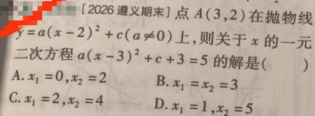

📷 点击查看原图
[2026 遵义期末] 点 A(3,2) 在抛物线 y=a(x−2)2+c（a=0）上，则关于 x 的一元二次方程 a(x−3)2+c+3=5 的解是（ ）
A. x1=0,x2=2 B. x1=x2=3 C. x1=2,x2=4 D. x1=1,x2=5
把 x=3、y=2 代入 y=a(x−2)2+c：
因此 a+c=2。
原方程：
两边同时减 3，得
把右边的 2 替换成 a+c：
两边同时减 c：
因为 a=0，两边除以 a：
开平方（注意正负两根）：
因此